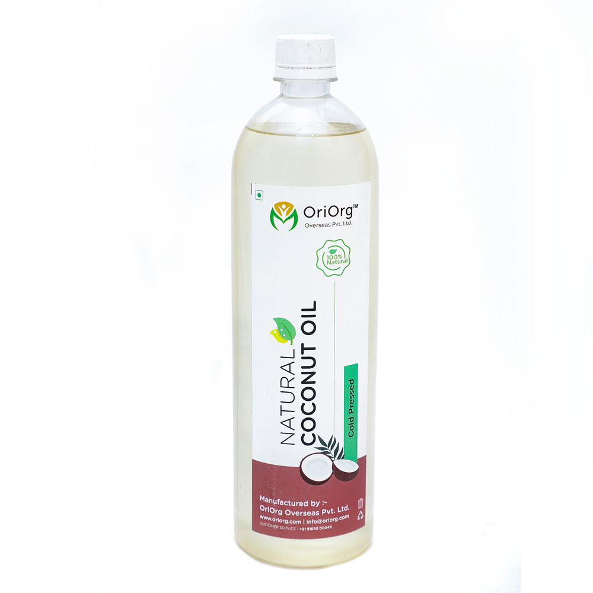

<div id="product-page" class="container" >
    	<div class="bg">
	    	<div class="row">    		
	    		<div class="col-sm-12">    			   			
					<h2 class="title text-center">Cold Pressed Virgin Coconut oil</h2>    			    		
			</div>			 		
		</div>    	
    		<div class="row"  >  
			<div class="col-sm-6">
				
			</div>
			<div class="product-information col-sm-6"><!--/product-information-->
				<h2>Cold Pressed Virgin Coconut oil</h2>
				<span>
					<span>&#8377;350 / 1ltr</span>
				<button (click)="addToCart('p2')" type="button" class="btn btn-fefault cart" ><i class="fa fa-shopping-cart"></i>Add to cart</button>
				<button (click)="addToCart('p2')" type="button" class="btn btn-fefault cart" routerLink="/cart" ><i class="fa fa-shopping-cart"></i>Buy it</button>
								</span>
								<p> <del> &#8377;450 / 1ltr</del> </p>
								<p><b>Availability:</b> In Stock</p>
								<p><b>Brand:</b> OriOrg</p>
<span>
					<span>&#8377;200 / half ltr</span>
				<button (click)="addToCart('p11')" type="button" class="btn btn-fefault cart" ><i class="fa fa-shopping-cart"></i>Add to cart</button>
				<button (click)="addToCart('p11')" type="button" class="btn btn-fefault cart" routerLink="/cart" ><i class="fa fa-shopping-cart"></i>Buy it</button>
								</span>
								<p> <del> &#8377;250 / 1ltr</del> </p>
								<p><b>Availability:</b> In Stock</p>
								<p><b>Brand:</b> OriOrg</p>

							</div><!--/product-information-->	
	    	</div>  

<br>
		<div class="row">    		
	    		<div class="col-sm-12">    			   			
			<h2 class="title text-center">BENEFITS</h2>
			</div>
			<div class="col-sm-1">    			   			
			</div>
			<div class="col-sm-10">    			   			
					<p>Cold pressed oil helps in preserving nutritive value within it, thus increasing the Storage quality for a longer term. New age refined oil will be heated to 230°C that will result in loss of most of its nutritional values and destroying Omega-6 Fatty acids.</p>
<p>Cold pressed oil helps in reducing bad cholesterol and allows the human body to store good cholesterol .The presence of Phytosterols helps in reducing and completely block bad cholesterol in the human body.</p>
<p>Cold pressed coconuts oils helps in reducing the hair fall. The coconut oil helps the hair growth by providing necessary proteins for your healthy and shiny hair. Cold pressed coconut oil helps in providing the minerals such as Magnesium and calcium that will directly help in the growth of bone.</p>
<h4>Hear Your Skin Better</h4>
<p>One of the ways MFCAs work best is revitalizing dry or problematic skin.  The quick absorption rate of coconut oil allows it to infuse cells with moisture and nutritive goodness.  You certainly can apply it as is right on to your skin, but you might want to try it as a DIY whipped lotion, using that beneficial cold pressed coconut oil.</p>
<p>Cold pressed coconut oil is one of the best ways you can naturally take care of your beauty needs.  With all its wonderful benefits for nourishing and protecting your skin, hair and body, you’ll wonder how you ever got along without it.</p>
<h4>Immunity Booster</h4>
<p>Using cold pressed coconut oil on frequent basis can definitely make your immune system better. Coconut oil has some really efficient properties like antibacterial that can safeguard body from any disease.</p>
<p>Making body free of any disease and discomfort is now possible because of Cold Pressed Coconut Oil. The method of obtaining cold pressed oil is distinct and it’s made in way that oil’s nutritious properties are maintained. Coconut oil can make the stomach functioning better and help in much faster and better digestion.</p>
<p>Presence of Antimicrobial Properties is so effective that it protects you from measles herpes, influenza and other common diseases. It kills the harmful bacteria and saves body from sickness which is caused due to these. </p>
<h4>Helpful in Weight Loss</h4>
<p>Too many people are worried for health because they are unable to control weight. This triggers hundred other problems that can lead to severe health issues in long term. But those who use the Cold Pressed Oil would see that weight loss is actually easily possible because of this oil.</p>
<p>This oil has the least chances of getting stored in the fatty tissues of body. This is why it gets utilized faster and is the ultimate energy booster. Coconut oil in this form can promote metabolic rates and could help you to lose weight according to your wish.</p>
<p>When women use this, they can see changes in their abdominal area and fat gets reduced faster. The belly and abdominal area are prominent parts where body fat gets stored and is hard to deal with. But with this oil, it’s effectively possible to push fat out of these body parts.</p>
			</div>	
	    		<div class="col-sm-1">    			   			
			</div>			 		
		</div>   
    	</div>	
</div><!--/#product-page-->

